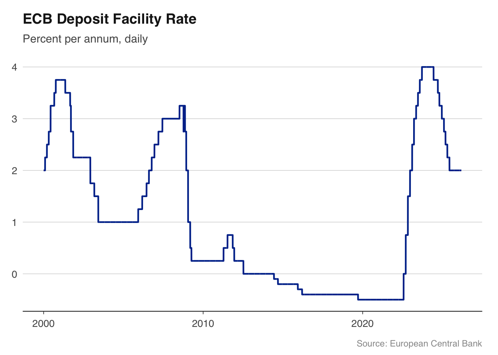

The popular image of an economist involves blackboards full of equations and grand pronouncements about the state of the world. The reality is more prosaic, and more interesting. Most applied macroeconomists spend their days doing some combination of four things.
Nowcasting is the art of estimating what the economy is doing right now, before official data arrive. GDP figures for Q1 are not published until late April at the earliest, and even then they are preliminary. Central bank staff, Treasury economists, and City forecasters build models that combine high-frequency indicators — retail sales, PMI surveys, tax receipts, card payment data — to produce a real-time estimate of growth. Chapter 9 covers this in detail.
Scenario analysis asks “what if?” questions. What happens to the public finances if interest rates stay at 5% for two more years? What is the fiscal cost of a recession that pushes unemployment to 6%? The OBR’s fiscal forecasts and the Bank of England’s stress tests are both exercises in scenario analysis, built on top of macroeconomic models.
Briefing notes are how analysis reaches decision-makers. A well-constructed briefing for the Chancellor or a Monetary Policy Committee member distils weeks of data work into a few pages: a chart showing the trend, a table showing the numbers, and a paragraph explaining what it means. The ability to go from raw data to a polished document in a reproducible pipeline is what separates modern analytical work from the spreadsheet era.
Forecast rounds are the recurring cycle at central banks and fiscal institutions. Every quarter, the Bank of England produces an Inflation Report (now the Monetary Policy Report); the OBR produces forecasts at each fiscal event. These rounds involve pulling the latest data, re-estimating models, running scenarios, and writing up the results — all under time pressure and all requiring audit trails. Reproducibility is not a nice-to-have; it is a compliance requirement.
This book teaches you to do all four, using R.
1.2 Why R for macroeconomics?
Most macroeconomic analysis still happens in Excel, MATLAB, or Stata. Each has its place, but R offers something none of them do: a free, open-source ecosystem that handles everything from data acquisition to publication-quality output in a single reproducible script.
Central banks are increasingly adopting R. The Bank of England uses R and Shiny dashboards for internal analysis and has published R code alongside research papers. The Reserve Bank of Australia’s data is accessible through readabs. The ECB publishes data through an API that can be queried directly from R.
The barrier has always been that the tools were scattered: one package for data, another for estimation, blog posts for the glue in between. This book brings them together.
NoteThe software landscape
The choice of software in macroeconomics is not purely technical — it reflects institutional history and the type of work being done.
MATLAB and Dynare dominate structural modelling. If you are estimating a DSGE model — the workhorse of central bank forecasting — you will almost certainly use Dynare, which runs on MATLAB (or its free clone, Octave). The Bank of England’s COMPASS model and the ECB’s NAWM are both Dynare models. MATLAB is expensive, proprietary, and its data handling is clunky, but its matrix algebra is fast and Dynare has no serious competitor.
Stata is the default in academic labour economics and microeconometrics but is less common in macro, where time series methods dominate. It has good VAR support but limited ecosystem for data acquisition.
R is strongest for data ingestion, time series analysis (VARs, state-space models, spectral methods), and visualisation. The vars, tsDyn, BVAR, and bvartools packages provide serious VAR and Bayesian VAR estimation. ggplot2 produces publication-quality charts. And packages like the ones used in this book make data acquisition trivial.
Python is growing rapidly, particularly for machine learning approaches to forecasting and for working with alternative data (web scraping, text analysis, satellite imagery). The statsmodels library provides VAR estimation, and pandas handles time series data well. But Python’s macro-specific ecosystem is thinner than R’s.
In practice, many teams use more than one tool: R for data and charts, MATLAB for DSGE models, Python for machine learning. This book focuses on R because it covers the largest share of what an applied macroeconomist needs.
1.3 The macro data landscape
Macroeconomic data comes from a small number of institutions. Each publishes data in its own format, through its own API (or lack thereof), with its own quirks. The packages used in this book wrap these sources into a common interface: you call a function, you get a data frame.
Table 1.1: Key macroeconomic data sources and their R packages
Source
What it publishes
R package
Office for National Statistics (ONS)
UK GDP, inflation, unemployment, wages, trade
ons
Bank of England (BoE)
Bank Rate, SONIA, gilt yields, mortgage rates
boe
HM Revenue & Customs (HMRC)
Tax receipts, corporation tax, stamp duty
hmrc
Office for Budget Responsibility (OBR)
Fiscal forecasts, public finances
obr
European Central Bank (ECB)
Policy rates, HICP, exchange rates, yield curves
readecb
OECD
Cross-country economic indicators
readoecd
World Bank
Development indicators for 200+ countries
WDI
US Federal Reserve (FRED)
800,000+ US and international series
fredr
Each of these packages follows a common pattern: named convenience functions, tidy data frames, and local caching. You call ecb_policy_rates() and get a data frame. No SDMX keys, no manual downloads, no copy-pasting from spreadsheets.
The UK packages (ons, boe, hmrc, obr) and the ECB package (readecb) were written by this book’s author specifically to fill gaps in the R ecosystem. Before these packages existed, pulling UK GDP data into R required navigating the ONS website, downloading a CSV, finding the right cell in a spreadsheet with dozens of tabs, and manually parsing dates. Now it takes one line.
1.4 A taste of what is coming
Here is a complete workflow — from data to chart — in under 10 lines:
library(readecb)library(ggplot2)source("../R/theme_macro.R")rates<-ecb_policy_rates(from ="2000-01")dfr<-rates[rates$rate=="Deposit facility rate", ]ggplot(dfr, aes(x =date, y =value))+geom_line(colour ="#003299", linewidth =0.8)+labs(title ="ECB Deposit Facility Rate", subtitle ="Percent per annum, daily", x =NULL, y =NULL, caption ="Source: European Central Bank")+theme_macro()

This example pulls the ECB’s deposit facility rate — the rate at which banks can deposit money overnight with the ECB — from 2000 to the present, and plots it. The negative rates from 2014 to 2022 and the rapid tightening cycle that followed are immediately visible. No manual downloads, no data cleaning, no date parsing. Just a function call and a chart.
By the end of this book, you will be able to pull data from any major central bank, build charts that belong in a policy report, estimate the models that central bankers actually use, and do it all in reproducible R scripts.
1.5 How this book is structured
Part I covers data acquisition. You will learn to pull data from the ONS, Bank of England, HMRC, OBR, ECB, and OECD, and to work with the time series structures that macroeconomic data comes in — mixed frequencies, data revisions, seasonal adjustment.
Part II covers visualisation. Macroeconomic charts have conventions — recession shading, fan charts for uncertainty, dual-axis plots for policy rates and inflation — and you will learn to produce them to publication standard using ggplot2.
Part III covers the models that practitioners use: Phillips curves, Taylor rules, nowcasting models, vector autoregressions (VARs), and fiscal multiplier analysis. The emphasis is on estimation and interpretation, not derivation.
Part IV covers special topics: exchange rate and trade analysis, the macroeconomics of climate change, and cross-country comparisons using OECD and World Bank data.
1.6 Exercises
Install the ons, boe, and readecb packages. Pull UK GDP data with ons::ons_gdp() and ECB policy rates with readecb::ecb_policy_rates(). What class are the returned objects? What columns do they have?
Using readecb::ecb_hicp(), download euro area inflation data from 2020 onwards. What was the peak annual inflation rate, and when did it occur?
Read the Bank of England’s latest Monetary Policy Summary (available on their website). Identify three data series mentioned in the summary that you could pull directly using the ons or boe packages. Write the R code to pull each one.
Source Code
---execute: eval: true---# Introduction {#sec-introduction}## What economists actually doThe popular image of an economist involves blackboards full of equations and grand pronouncements about the state of the world. The reality is more prosaic, and more interesting. Most applied macroeconomists spend their days doing some combination of four things.**Nowcasting** is the art of estimating what the economy is doing right now, before official data arrive. GDP figures for Q1 are not published until late April at the earliest, and even then they are preliminary. Central bank staff, Treasury economists, and City forecasters build models that combine high-frequency indicators — retail sales, PMI surveys, tax receipts, card payment data — to produce a real-time estimate of growth. Chapter [-@sec-nowcasting] covers this in detail.**Scenario analysis** asks "what if?" questions. What happens to the public finances if interest rates stay at 5% for two more years? What is the fiscal cost of a recession that pushes unemployment to 6%? The OBR's fiscal forecasts and the Bank of England's stress tests are both exercises in scenario analysis, built on top of macroeconomic models.**Briefing notes** are how analysis reaches decision-makers. A well-constructed briefing for the Chancellor or a Monetary Policy Committee member distils weeks of data work into a few pages: a chart showing the trend, a table showing the numbers, and a paragraph explaining what it means. The ability to go from raw data to a polished document in a reproducible pipeline is what separates modern analytical work from the spreadsheet era.**Forecast rounds** are the recurring cycle at central banks and fiscal institutions. Every quarter, the Bank of England produces an Inflation Report (now the Monetary Policy Report); the OBR produces forecasts at each fiscal event. These rounds involve pulling the latest data, re-estimating models, running scenarios, and writing up the results — all under time pressure and all requiring audit trails. Reproducibility is not a nice-to-have; it is a compliance requirement.This book teaches you to do all four, using R.## Why R for macroeconomics?Most macroeconomic analysis still happens in Excel, MATLAB, or Stata. Each has its place, but R offers something none of them do: a free, open-source ecosystem that handles everything from data acquisition to publication-quality output in a single reproducible script.Central banks are increasingly adopting R. The Bank of England uses R and Shiny dashboards for internal analysis and has published R code alongside research papers. The Reserve Bank of Australia's data is accessible through `readabs`. The ECB publishes data through an API that can be queried directly from R.The barrier has always been that the tools were scattered: one package for data, another for estimation, blog posts for the glue in between. This book brings them together.::: {.callout-note}## The software landscapeThe choice of software in macroeconomics is not purely technical — it reflects institutional history and the type of work being done.**MATLAB and Dynare** dominate structural modelling. If you are estimating a DSGE model — the workhorse of central bank forecasting — you will almost certainly use Dynare, which runs on MATLAB (or its free clone, Octave). The Bank of England's COMPASS model and the ECB's NAWM are both Dynare models. MATLAB is expensive, proprietary, and its data handling is clunky, but its matrix algebra is fast and Dynare has no serious competitor.**Stata** is the default in academic labour economics and microeconometrics but is less common in macro, where time series methods dominate. It has good VAR support but limited ecosystem for data acquisition.**R** is strongest for data ingestion, time series analysis (VARs, state-space models, spectral methods), and visualisation. The `vars`, `tsDyn`, `BVAR`, and `bvartools` packages provide serious VAR and Bayesian VAR estimation. `ggplot2` produces publication-quality charts. And packages like the ones used in this book make data acquisition trivial.**Python** is growing rapidly, particularly for machine learning approaches to forecasting and for working with alternative data (web scraping, text analysis, satellite imagery). The `statsmodels` library provides VAR estimation, and `pandas` handles time series data well. But Python's macro-specific ecosystem is thinner than R's.In practice, many teams use more than one tool: R for data and charts, MATLAB for DSGE models, Python for machine learning. This book focuses on R because it covers the largest share of what an applied macroeconomist needs.:::## The macro data landscapeMacroeconomic data comes from a small number of institutions. Each publishes data in its own format, through its own API (or lack thereof), with its own quirks. The packages used in this book wrap these sources into a common interface: you call a function, you get a data frame.| Source | What it publishes | R package ||---|---|---|| Office for National Statistics (ONS) | UK GDP, inflation, unemployment, wages, trade |`ons`|| Bank of England (BoE) | Bank Rate, SONIA, gilt yields, mortgage rates |`boe`|| HM Revenue & Customs (HMRC) | Tax receipts, corporation tax, stamp duty |`hmrc`|| Office for Budget Responsibility (OBR) | Fiscal forecasts, public finances |`obr`|| European Central Bank (ECB) | Policy rates, HICP, exchange rates, yield curves |`readecb`|| OECD | Cross-country economic indicators |`readoecd`|| World Bank | Development indicators for 200+ countries |`WDI`|| US Federal Reserve (FRED) | 800,000+ US and international series |`fredr`|: Key macroeconomic data sources and their R packages {#tbl-data-sources}Each of these packages follows a common pattern: named convenience functions, tidy data frames, and local caching. You call `ecb_policy_rates()` and get a data frame. No SDMX keys, no manual downloads, no copy-pasting from spreadsheets.The UK packages (`ons`, `boe`, `hmrc`, `obr`) and the ECB package (`readecb`) were written by this book's author specifically to fill gaps in the R ecosystem. Before these packages existed, pulling UK GDP data into R required navigating the ONS website, downloading a CSV, finding the right cell in a spreadsheet with dozens of tabs, and manually parsing dates. Now it takes one line.## A taste of what is comingHere is a complete workflow — from data to chart — in under 10 lines:```{r}library(readecb)library(ggplot2)source("../R/theme_macro.R")rates <-ecb_policy_rates(from ="2000-01")dfr <- rates[rates$rate =="Deposit facility rate", ]ggplot(dfr, aes(x = date, y = value)) +geom_line(colour ="#003299", linewidth =0.8) +labs(title ="ECB Deposit Facility Rate",subtitle ="Percent per annum, daily",x =NULL, y =NULL,caption ="Source: European Central Bank") +theme_macro()```This example pulls the ECB's deposit facility rate — the rate at which banks can deposit money overnight with the ECB — from 2000 to the present, and plots it. The negative rates from 2014 to 2022 and the rapid tightening cycle that followed are immediately visible. No manual downloads, no data cleaning, no date parsing. Just a function call and a chart.By the end of this book, you will be able to pull data from any major central bank, build charts that belong in a policy report, estimate the models that central bankers actually use, and do it all in reproducible R scripts.## How this book is structured**Part I** covers data acquisition. You will learn to pull data from the ONS, Bank of England, HMRC, OBR, ECB, and OECD, and to work with the time series structures that macroeconomic data comes in — mixed frequencies, data revisions, seasonal adjustment.**Part II** covers visualisation. Macroeconomic charts have conventions — recession shading, fan charts for uncertainty, dual-axis plots for policy rates and inflation — and you will learn to produce them to publication standard using `ggplot2`.**Part III** covers the models that practitioners use: Phillips curves, Taylor rules, nowcasting models, vector autoregressions (VARs), and fiscal multiplier analysis. The emphasis is on estimation and interpretation, not derivation.**Part IV** covers special topics: exchange rate and trade analysis, the macroeconomics of climate change, and cross-country comparisons using OECD and World Bank data.## Exercises1. Install the `ons`, `boe`, and `readecb` packages. Pull UK GDP data with `ons::ons_gdp()` and ECB policy rates with `readecb::ecb_policy_rates()`. What class are the returned objects? What columns do they have?2. Using `readecb::ecb_hicp()`, download euro area inflation data from 2020 onwards. What was the peak annual inflation rate, and when did it occur?3. Read the Bank of England's latest Monetary Policy Summary (available on their website). Identify three data series mentioned in the summary that you could pull directly using the `ons` or `boe` packages. Write the R code to pull each one.